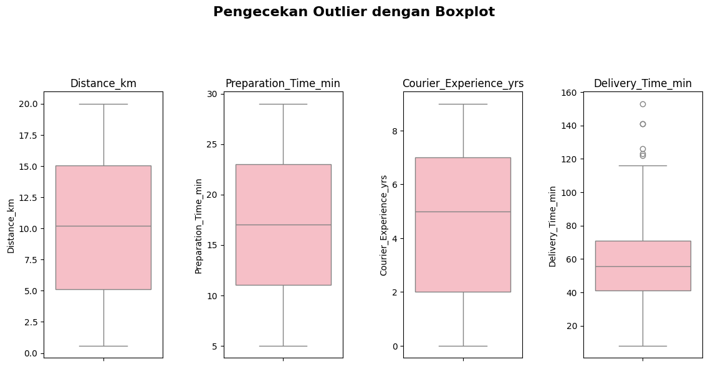
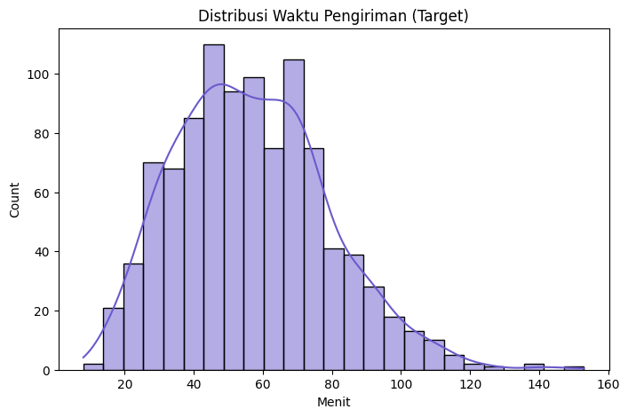
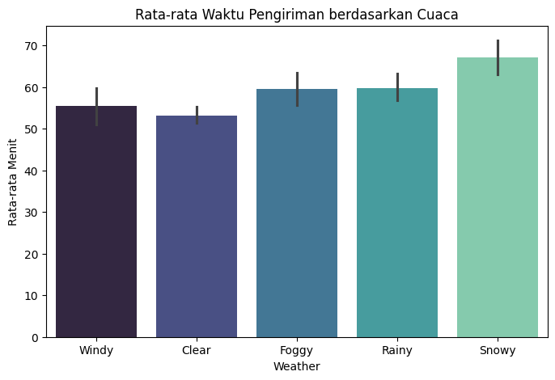
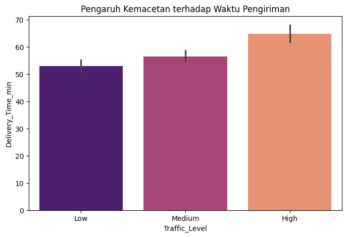
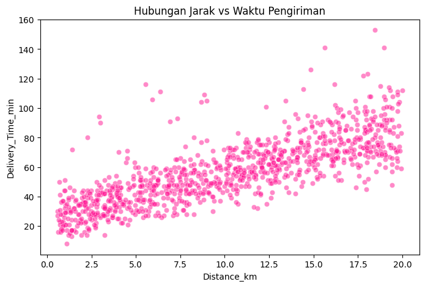
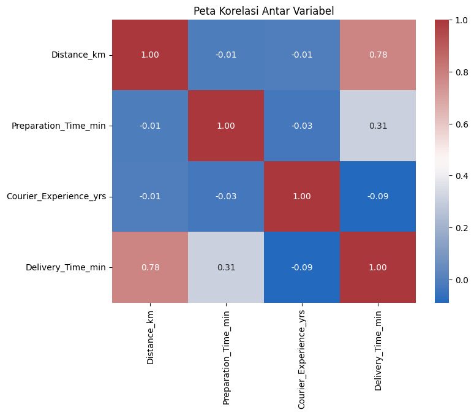
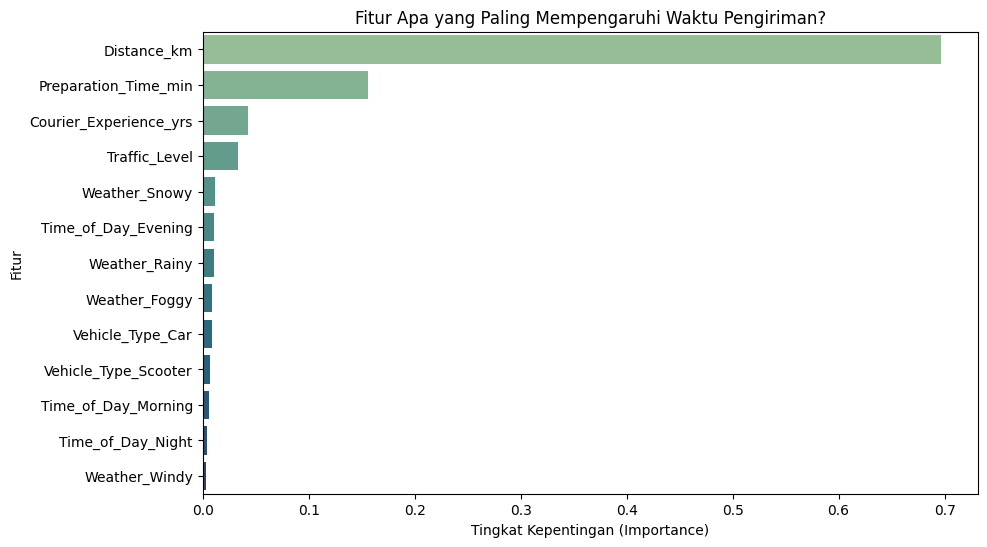
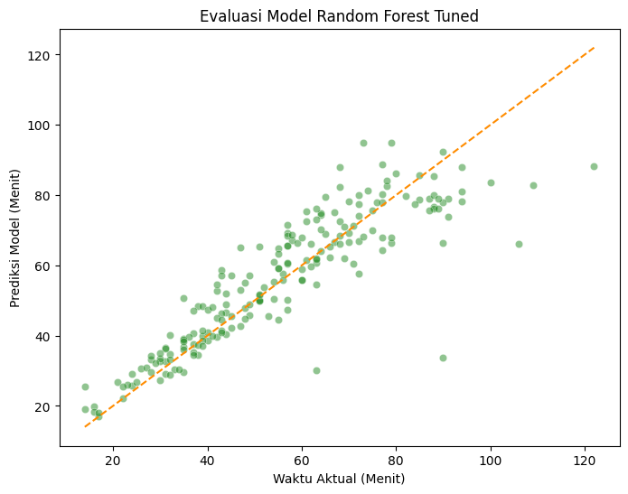
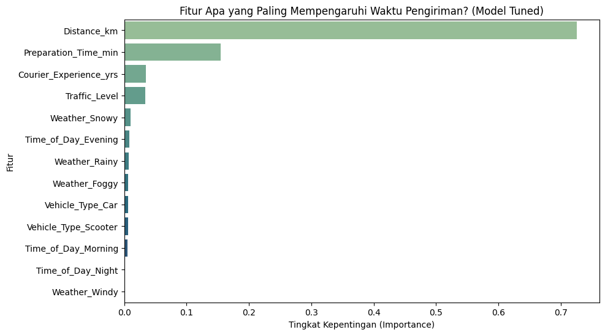
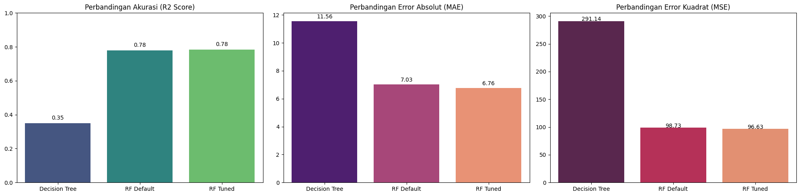

#Import library yang digunakan
import pandas as pd
import numpy as np
import matplotlib.pyplot as plt
import seaborn as snsRandom Forest for Food Delivery Times Prediction
Projek UAS Pengantar Data Sains Semester 123
Nisrina Alissy (1314623008)
Statistika 2023A
Deskripsi:
Menganalisis penerapan model machine learning dalam memprediksi waktu pengiriman secara akurat serta mengidentifikasi faktor-faktor yang paling berpengaruh terhadap durasi pengiriman.
Food Delivery Times Dataset
source: https://www.kaggle.com/datasets/denkuznetz/food-delivery-time-prediction
Key Features
Order_ID: Unique identifier for each order.
Distance_km: The delivery distance in kilometers.
Weather: Weather conditions during the delivery, including Clear, Rainy, Snowy, Foggy, and Windy.
Traffic_Level: Traffic conditions categorized as Low, Medium, or High.
Time_of_Day: The time when the delivery took place, categorized as Morning, Afternoon, Evening, or Night.
Vehicle_Type: Type of vehicle used for delivery, including Bike, Scooter, and Car.
Preparation_Time_min: The time required to prepare the order, measured in minutes.
Courier_Experience_yrs: Experience of the courier in years.
Delivery_Time_min: The total delivery time in minutes (target variable).
Input data
#input data
link = "https://raw.githubusercontent.com/alissysays/SMT5_NA/refs/heads/main/Project%20UAS%20PDS/Food_Delivery_Times.csv"
df = pd.read_csv(link)
df.head()| Order_ID | Distance_km | Weather | Traffic_Level | Time_of_Day | Vehicle_Type | Preparation_Time_min | Courier_Experience_yrs | Delivery_Time_min | |
|---|---|---|---|---|---|---|---|---|---|
| 0 | 522 | 7.93 | Windy | Low | Afternoon | Scooter | 12 | 1.0 | 43 |
| 1 | 738 | 16.42 | Clear | Medium | Evening | Bike | 20 | 2.0 | 84 |
| 2 | 741 | 9.52 | Foggy | Low | Night | Scooter | 28 | 1.0 | 59 |
| 3 | 661 | 7.44 | Rainy | Medium | Afternoon | Scooter | 5 | 1.0 | 37 |
| 4 | 412 | 19.03 | Clear | Low | Morning | Bike | 16 | 5.0 | 68 |
df.info()<class 'pandas.core.frame.DataFrame'>
RangeIndex: 1000 entries, 0 to 999
Data columns (total 9 columns):
# Column Non-Null Count Dtype
--- ------ -------------- -----
0 Order_ID 1000 non-null int64
1 Distance_km 1000 non-null float64
2 Weather 970 non-null object
3 Traffic_Level 970 non-null object
4 Time_of_Day 970 non-null object
5 Vehicle_Type 1000 non-null object
6 Preparation_Time_min 1000 non-null int64
7 Courier_Experience_yrs 970 non-null float64
8 Delivery_Time_min 1000 non-null int64
dtypes: float64(2), int64(3), object(4)
memory usage: 70.4+ KB#ringkasan statistik
df.describe()| Order_ID | Distance_km | Preparation_Time_min | Courier_Experience_yrs | Delivery_Time_min | |
|---|---|---|---|---|---|
| count | 1000.000000 | 1000.000000 | 1000.000000 | 970.000000 | 1000.000000 |
| mean | 500.500000 | 10.059970 | 16.982000 | 4.579381 | 56.732000 |
| std | 288.819436 | 5.696656 | 7.204553 | 2.914394 | 22.070915 |
| min | 1.000000 | 0.590000 | 5.000000 | 0.000000 | 8.000000 |
| 25% | 250.750000 | 5.105000 | 11.000000 | 2.000000 | 41.000000 |
| 50% | 500.500000 | 10.190000 | 17.000000 | 5.000000 | 55.500000 |
| 75% | 750.250000 | 15.017500 | 23.000000 | 7.000000 | 71.000000 |
| max | 1000.000000 | 19.990000 | 29.000000 | 9.000000 | 153.000000 |
EDA
# missing value check
df.isna().sum()| 0 | |
|---|---|
| Order_ID | 0 |
| Distance_km | 0 |
| Weather | 30 |
| Traffic_Level | 30 |
| Time_of_Day | 30 |
| Vehicle_Type | 0 |
| Preparation_Time_min | 0 |
| Courier_Experience_yrs | 30 |
| Delivery_Time_min | 0 |
# Handle missing value
# Fill categorical columns with mode
for col in ['Weather', 'Traffic_Level', 'Time_of_Day']:
df[col] = df[col].fillna(df[col].mode()[0])
# Fill numerical column with median
df['Courier_Experience_yrs'] = df['Courier_Experience_yrs'].fillna(df['Courier_Experience_yrs'].median())
print("Jumlah Missing Value SETELAH Imputasi:")
print(df.isnull().sum())Jumlah Missing Value SETELAH Imputasi:
Order_ID 0
Distance_km 0
Weather 0
Traffic_Level 0
Time_of_Day 0
Vehicle_Type 0
Preparation_Time_min 0
Courier_Experience_yrs 0
Delivery_Time_min 0
dtype: int64# duplicate data check
print(f'Number of duplicates in this dataset: {df.duplicated().sum()}')
df = df.drop_duplicates()Number of duplicates in this dataset: 0# checking unique values
df.nunique()| 0 | |
|---|---|
| Order_ID | 1000 |
| Distance_km | 785 |
| Weather | 5 |
| Traffic_Level | 3 |
| Time_of_Day | 4 |
| Vehicle_Type | 3 |
| Preparation_Time_min | 25 |
| Courier_Experience_yrs | 10 |
| Delivery_Time_min | 108 |
EDA Graphs
#cek outlier
# Boxplot untuk mengecek outlier
# Select numerical columns
num_cols = ['Distance_km', 'Preparation_Time_min', 'Courier_Experience_yrs', 'Delivery_Time_min']
# Create boxplots
plt.figure(figsize=(12, 6))
for i, col in enumerate(num_cols):
plt.subplot(1, 4, i+1)
sns.boxplot(y=df[col], color='lightpink')
plt.title(col)
plt.tight_layout()
plt.suptitle("Pengecekan Outlier dengan Boxplot", y=1.02, fontsize=16, fontweight='bold')
plt.tight_layout(pad=3.0)
plt.show()
# Histogram: Distribusi Target Variable
plt.figure(figsize=(8, 5))
sns.histplot(df['Delivery_Time_min'], kde=True, color='slateblue')
plt.title('Distribusi Waktu Pengiriman (Target)')
plt.xlabel('Menit')
plt.show()
#Bar Chart: Pengaruh Cuaca terhadap Waktu (Kategori vs Numerik)
plt.figure(figsize=(8, 5))
sns.barplot(x='Weather', y='Delivery_Time_min', data=df, estimator='mean', palette='mako')
plt.title('Rata-rata Waktu Pengiriman berdasarkan Cuaca')
plt.ylabel('Rata-rata Menit')
plt.show()/tmp/ipython-input-3484910305.py:3: FutureWarning:
Passing `palette` without assigning `hue` is deprecated and will be removed in v0.14.0. Assign the `x` variable to `hue` and set `legend=False` for the same effect.
sns.barplot(x='Weather', y='Delivery_Time_min', data=df, estimator='mean', palette='mako')
#Bar Chart: Pengaruh Macet (Traffic) terhadap Waktu
plt.figure(figsize=(8, 5))
sns.barplot(x='Traffic_Level', y='Delivery_Time_min', data=df, estimator='mean', palette='magma')
plt.title('Pengaruh Kemacetan terhadap Waktu Pengiriman')
plt.show()/tmp/ipython-input-2782891154.py:3: FutureWarning:
Passing `palette` without assigning `hue` is deprecated and will be removed in v0.14.0. Assign the `x` variable to `hue` and set `legend=False` for the same effect.
sns.barplot(x='Traffic_Level', y='Delivery_Time_min', data=df, estimator='mean', palette='magma')
#Scatter Plot: Jarak vs Waktu (Numerik vs Numerik)
plt.figure(figsize=(8, 5))
sns.scatterplot(x='Distance_km', y='Delivery_Time_min', data=df, alpha=0.5, color='deeppink')
plt.title('Hubungan Jarak vs Waktu Pengiriman')
plt.show()
#Heatmap Korelasi
plt.figure(figsize=(8, 6))
kolom_angka = df[['Distance_km', 'Preparation_Time_min', 'Courier_Experience_yrs', 'Delivery_Time_min']]
correlation = kolom_angka.corr()
sns.heatmap(correlation, annot=True, cmap='vlag', fmt=".2f")
plt.title('Peta Korelasi Antar Variabel')
plt.show()
# Cek sebaran data kategori
cols_cat = ['Weather', 'Traffic_Level', 'Time_of_Day', 'Vehicle_Type']
for col in cols_cat:
print(df[col].value_counts())
print("-" * 20)Weather
Clear 500
Rainy 204
Foggy 103
Snowy 97
Windy 96
Name: count, dtype: int64
--------------------
Traffic_Level
Medium 420
Low 383
High 197
Name: count, dtype: int64
--------------------
Time_of_Day
Morning 338
Evening 293
Afternoon 284
Night 85
Name: count, dtype: int64
--------------------
Vehicle_Type
Bike 503
Scooter 302
Car 195
Name: count, dtype: int64
--------------------# Hapus kolom yang tidak berguna untuk prediksi
df.drop('Order_ID', axis=1, inplace=True)Preprocessing data
# Encoding
# 1. Ordinal Encoding untuk Traffic (Karena punya urutan)
traffic_map = {'Low': 1, 'Medium': 2, 'High': 3}
# Ubah kolom Traffic jadi angka
df['Traffic_Level'] = df['Traffic_Level'].map(traffic_map)
# 2. One-Hot Encoding untuk sisanya (Yang tidak punya urutan)
cols_nominal = ['Weather', 'Time_of_Day', 'Vehicle_Type']
df_clean = pd.get_dummies(df, columns=cols_nominal, drop_first=True)
# Cek hasil
print(df_clean.info())<class 'pandas.core.frame.DataFrame'>
RangeIndex: 1000 entries, 0 to 999
Data columns (total 14 columns):
# Column Non-Null Count Dtype
--- ------ -------------- -----
0 Distance_km 1000 non-null float64
1 Traffic_Level 1000 non-null int64
2 Preparation_Time_min 1000 non-null int64
3 Courier_Experience_yrs 1000 non-null float64
4 Delivery_Time_min 1000 non-null int64
5 Weather_Foggy 1000 non-null bool
6 Weather_Rainy 1000 non-null bool
7 Weather_Snowy 1000 non-null bool
8 Weather_Windy 1000 non-null bool
9 Time_of_Day_Evening 1000 non-null bool
10 Time_of_Day_Morning 1000 non-null bool
11 Time_of_Day_Night 1000 non-null bool
12 Vehicle_Type_Car 1000 non-null bool
13 Vehicle_Type_Scooter 1000 non-null bool
dtypes: bool(9), float64(2), int64(3)
memory usage: 48.0 KB
None# ENCODING (One-Hot Encoding)
#df_clean = pd.get_dummies(df, columns=cols_cat, drop_first=True)
# Cek hasil akhirnya
#print("Info Data Siap Training:")
#print(df_clean.info())print(df_clean[['Traffic_Level']].head()) Traffic_Level
0 1
1 2
2 1
3 2
4 1df_clean.head()| Distance_km | Traffic_Level | Preparation_Time_min | Courier_Experience_yrs | Delivery_Time_min | Weather_Foggy | Weather_Rainy | Weather_Snowy | Weather_Windy | Time_of_Day_Evening | Time_of_Day_Morning | Time_of_Day_Night | Vehicle_Type_Car | Vehicle_Type_Scooter | |
|---|---|---|---|---|---|---|---|---|---|---|---|---|---|---|
| 0 | 7.93 | 1 | 12 | 1.0 | 43 | False | False | False | True | False | False | False | False | True |
| 1 | 16.42 | 2 | 20 | 2.0 | 84 | False | False | False | False | True | False | False | False | False |
| 2 | 9.52 | 1 | 28 | 1.0 | 59 | True | False | False | False | False | False | True | False | True |
| 3 | 7.44 | 2 | 5 | 1.0 | 37 | False | True | False | False | False | False | False | False | True |
| 4 | 19.03 | 1 | 16 | 5.0 | 68 | False | False | False | False | False | True | False | False | False |
#split data into train and split
from sklearn.model_selection import train_test_split
X = df_clean.drop('Delivery_Time_min', axis=1)
y = df_clean['Delivery_Time_min']
X_train, X_test, y_train, y_test = train_test_split(X, y, test_size = 0.2, random_state = 42)
print("\n Hasil Pembagian Data (80:20):")
print(f"X_train (Data Latih Fitur): {X_train.shape}")
print(f"X_test (Data Uji Fitur): {X_test.shape}")
print(f"y_train (Data Latih Target): {y_train.shape}")
print(f"y_test (Data Uji Target): {y_test.shape}")
Hasil Pembagian Data (80:20):
X_train (Data Latih Fitur): (800, 13)
X_test (Data Uji Fitur): (200, 13)
y_train (Data Latih Target): (800,)
y_test (Data Uji Target): (200,)Random Forest prediction
baseline (decision tree)
from sklearn.tree import DecisionTreeRegressor
from sklearn.metrics import mean_absolute_error, r2_score, mean_squared_error
# Decision Tree---
dt_model = DecisionTreeRegressor(random_state=42)
dt_model.fit(X_train, y_train)
# Evaluasi DT
y_pred_dt = dt_model.predict(X_test)
r2_dt = r2_score(y_test, y_pred_dt)
mae_dt = mean_absolute_error(y_test, y_pred_dt)
mse_dt = mean_squared_error(y_test, y_pred_dt)
rmse_dt = np.sqrt(mse_dt)
print("-- evaluasi decision tree--")
print(f"MAE: {mae_dt:.2f} menit")
print(f"RMSE: {rmse_dt:.2f}")
print(f"Akurasi (R2 Score): {r2_dt:.2f} (atau {r2_dt*100:.1f}%)")-- evaluasi decision tree--
MAE: 11.56 menit
RMSE: 17.06
Akurasi (R2 Score): 0.35 (atau 35.0%)Random Forest (default)
from sklearn.ensemble import RandomForestRegressor
# Inisialisasi model Random Forest Regressor
rf_model = RandomForestRegressor(random_state=42)
rf_model.fit(X_train, y_train)RandomForestRegressor(random_state=42)In a Jupyter environment, please rerun this cell to show the HTML representation or trust the notebook.
On GitHub, the HTML representation is unable to render, please try loading this page with nbviewer.org.
RandomForestRegressor(random_state=42)
# Evaluasi model
y_pred = rf_model.predict(X_test)
# Hitung errornya
mae = mean_absolute_error(y_test, y_pred)
r2 = r2_score(y_test, y_pred)
mse = mean_squared_error(y_test, y_pred)
rmse = np.sqrt(mse)
print("-- evaluasi random forest--")
print(f"MAE: {mae:.2f} menit")
print(f"RMSE: {rmse:.2f}")
print(f"Akurasi (R2 Score): {r2:.2f} (atau {r2*100:.1f}%)")-- evaluasi random forest--
MAE: 7.03 menit
RMSE: 9.94
Akurasi (R2 Score): 0.78 (atau 78.0%)#scatter plot
plt.figure(figsize=(8, 6))
# Plot Scatter: Sumbu X = Data Asli, Sumbu Y = Prediksi Model
sns.scatterplot(x=y_test, y=y_pred, alpha=0.5, color='forestgreen')
min_val = min(min(y_test), min(y_pred))
max_val = max(max(y_test), max(y_pred))
plt.plot([min_val, max_val], [min_val, max_val], color='darkorange', linestyle='--')
plt.title('Evaluasi Model: Waktu Aktual vs Prediksi')
plt.xlabel('Waktu Aktual (Menit)')
plt.ylabel('Prediksi Model (Menit)')
plt.show()#feature importance
importances = rf_model.feature_importances_
feature_names = X.columns
# DataFrame
fi_df = pd.DataFrame({'Fitur': feature_names, 'Importance': importances})
fi_df = fi_df.sort_values(by='Importance', ascending=False)
plt.figure(figsize=(10, 6))
sns.barplot(x='Importance', y='Fitur', data=fi_df, palette='crest')
plt.title('Fitur Apa yang Paling Mempengaruhi Waktu Pengiriman?')
plt.xlabel('Tingkat Kepentingan (Importance)')
plt.ylabel('Fitur')
plt.show()/tmp/ipython-input-1841920019.py:10: FutureWarning:
Passing `palette` without assigning `hue` is deprecated and will be removed in v0.14.0. Assign the `y` variable to `hue` and set `legend=False` for the same effect.
sns.barplot(x='Importance', y='Fitur', data=fi_df, palette='crest')
Random Forest (w/ Tuning)
from sklearn.model_selection import GridSearchCV
# --- Random Forest (w/tuning) ---
param_grid = {
'n_estimators': [100, 200],
'max_depth': [None, 10, 20],
'min_samples_split': [2, 5],
'min_samples_leaf': [1, 2]
}
# Grid Search
rf_tuned = GridSearchCV(estimator=RandomForestRegressor(random_state=42),
param_grid=param_grid,
cv=3,
n_jobs=-1,
verbose=1)
rf_tuned.fit(X_train, y_train)
# Ambil model terbaik hasil tuning
best_rf = rf_tuned.best_estimator_
# Evaluasi Model Tuning
y_pred_tuned = best_rf.predict(X_test)
r2_tuned = r2_score(y_test, y_pred_tuned)
mae_tuned = mean_absolute_error(y_test, y_pred_tuned)
mse_tuned = mean_squared_error(y_test, y_pred_tuned)
rmse_tuned = np.sqrt(mse_tuned)
print("-- evaluasi random forest (w/ tuning) --")
print(f"MAE: {mae_tuned:.2f} menit")
print(f"RMSE: {rmse_tuned:.2f}")
print(f"Akurasi (R2 Score): {r2_tuned:.2f} (atau {r2_tuned*100:.1f}%)")
print("Parameter Terbaik:", rf_tuned.best_params_)Fitting 3 folds for each of 24 candidates, totalling 72 fits
-- evaluasi random forest (w/ tuning) --
MAE: 6.74 menit
RMSE: 9.81
Akurasi (R2 Score): 0.79 (atau 78.5%)
Parameter Terbaik: {'max_depth': 10, 'min_samples_leaf': 2, 'min_samples_split': 5, 'n_estimators': 200}the tuned visualize
#scatter plot
plt.figure(figsize=(8, 6))
# Plot Scatter: Sumbu X = Data Asli, Sumbu Y = Prediksi Model
sns.scatterplot(x=y_test, y=y_pred_tuned, alpha=0.5, color='forestgreen')
min_val = min(min(y_test), min(y_pred_tuned))
max_val = max(max(y_test), max(y_pred_tuned))
plt.plot([min_val, max_val], [min_val, max_val], color='darkorange', linestyle='--')
plt.title('Evaluasi Model Random Forest Tuned')
plt.xlabel('Waktu Aktual (Menit)')
plt.ylabel('Prediksi Model (Menit)')
plt.show()
#feature importance
model_terbaik = rf_tuned.best_estimator_
importances = model_terbaik.feature_importances_
feature_names = X.columns
fi_df = pd.DataFrame({'Fitur': feature_names, 'Importance': importances})
fi_df = fi_df.sort_values(by='Importance', ascending=False)
plt.figure(figsize=(10, 6))
sns.barplot(x='Importance', y='Fitur', data=fi_df, palette='crest')
plt.title('Fitur Apa yang Paling Mempengaruhi Waktu Pengiriman? (Model Tuned)')
plt.xlabel('Tingkat Kepentingan (Importance)')
plt.ylabel('Fitur')
plt.show()/tmp/ipython-input-2359978402.py:9: FutureWarning:
Passing `palette` without assigning `hue` is deprecated and will be removed in v0.14.0. Assign the `y` variable to `hue` and set `legend=False` for the same effect.
sns.barplot(x='Importance', y='Fitur', data=fi_df, palette='crest')
comparison
# result
results = pd.DataFrame({
"Model": [
"Decision Tree",
"Random Forest (Default)",
"Random Forest (Tuned)"
],
"MAE": [
mae_dt,
mae,
mae_tuned
],
"RMSE": [
np.sqrt(mse_dt),
np.sqrt(mse),
np.sqrt(mse_tuned)
],
"R²": [
r2_dt,
r2,
r2_tuned
]
})
results = results.round(4)
print(results) Model MAE RMSE R²
0 Decision Tree 11.5650 17.0630 0.3505
1 Random Forest (Default) 7.0318 9.9365 0.7797
2 Random Forest (Tuned) 6.7436 9.8090 0.7853# visualize
models = ['Decision Tree', 'RF Default', 'RF Tuned']
r2_scores = [r2_dt, r2, r2_tuned]
mae_scores = [mae_dt, mae, mae_tuned]
mse_scores = [mse_dt, mse, mse_tuned]
fig, ax = plt.subplots(1, 3, figsize=(20, 5))
# Grafik R2 Score (Makin tinggi makin bagus)
sns.barplot(x=models, y=r2_scores, palette='viridis', ax=ax[0])
ax[0].set_title('Perbandingan Akurasi (R2 Score)')
ax[0].set_ylim(0, 1)
for i, v in enumerate(r2_scores):
ax[0].text(i, v + 0.02, f"{v:.2f}", ha='center')
# Grafik MAE (Makin rendah makin bagus)
sns.barplot(x=models, y=mae_scores, palette='magma', ax=ax[1])
ax[1].set_title('Perbandingan Error Absolut (MAE)')
for i, v in enumerate(mae_scores):
ax[1].text(i, v + 0.2, f"{v:.2f}", ha='center')
# Grafik MSE (Makin rendah makin bagus)
sns.barplot(x=models, y=mse_scores, palette='rocket', ax=ax[2])
ax[2].set_title('Perbandingan Error Kuadrat (MSE)')
for i, v in enumerate(mse_scores):
ax[2].text(i, v + 0.5, f"{v:.2f}", ha='center')
plt.tight_layout()
plt.show()/tmp/ipython-input-23706664.py:10: FutureWarning:
Passing `palette` without assigning `hue` is deprecated and will be removed in v0.14.0. Assign the `x` variable to `hue` and set `legend=False` for the same effect.
sns.barplot(x=models, y=r2_scores, palette='viridis', ax=ax[0])
/tmp/ipython-input-23706664.py:17: FutureWarning:
Passing `palette` without assigning `hue` is deprecated and will be removed in v0.14.0. Assign the `x` variable to `hue` and set `legend=False` for the same effect.
sns.barplot(x=models, y=mae_scores, palette='magma', ax=ax[1])
/tmp/ipython-input-23706664.py:23: FutureWarning:
Passing `palette` without assigning `hue` is deprecated and will be removed in v0.14.0. Assign the `x` variable to `hue` and set `legend=False` for the same effect.
sns.barplot(x=models, y=mse_scores, palette='rocket', ax=ax[2])